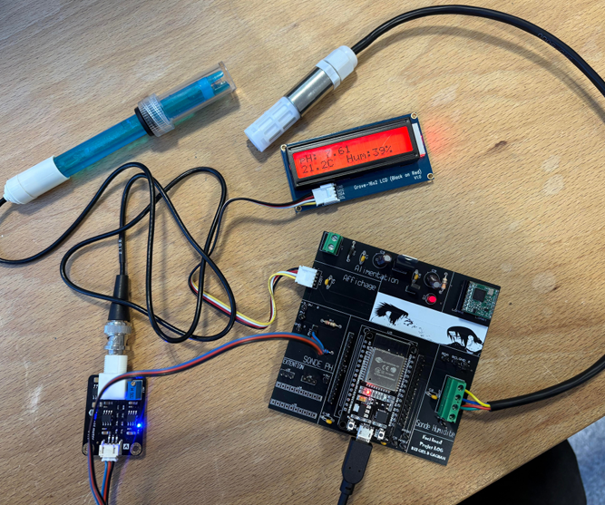

CV_IMED_FACI.pdf
Consultez mon CV pour découvrir plus en détail mon profil et mon parcours.
Ouvrir mon CVPortfolio personnel / 2026
<Étudiant en Licence Professionnelle MIAW_/>
// 01
CV_IMED_FACI.pdf
Consultez mon CV pour découvrir plus en détail mon profil et mon parcours.
Ouvrir mon CV// 02
> QUI SUIS-JE ?
Étudiant en Licence Professionnelle MIAW, après un BTS CIEL, je m’intéresse au développement web et aux systèmes connectés. J’aime comprendre comment les outils numériques fonctionnent, de l’interface jusqu’aux équipements qui collectent les données.
const motivation = "apprendre et créer";
> CE QUI M’ANIME
> SITUATION
Licence Professionnelle
Métiers de l’Informatique — MIAW
Recherche d’alternance
// 03
Des bases variées, du développement au support informatique.
const skills = { web: ["HTML", "CSS", "PHP"], database: ["SQL", "MCD/MLD"], systems: ["Windows", "Linux", "Réseaux"], support: ["Installation", "Maintenance"]};_Création de pages et d’applications web.
Structuration et interrogation des données.
Environnements et notions de réseaux informatiques.
Installation, configuration et assistance utilisateur.
Expérience de projet avec carte, capteurs et transmission de mesures.
Participation à un projet d’étude collectif en BTS CIEL.
// 04
Métiers de l’Informatique
Formation spécialisée dans le développement d’applications web.
Lycée polyvalent de Cachan
Projet d’étude : Composteur Connecté, programmation et traitement de données.
Lycée Jean Macé
Baccalauréat technologique sciences et technologies de l’industrie.
Keolis · Mennecy
Installation et configuration de postes, maintenance matérielle et réseau, support utilisateurs.
Cabinet AXL Architecture
Immersion professionnelle, organisation et tâches administratives.
// 05
Quelques réalisations issues de ma formation et de mon parcours.

Intégration de la partie Compost, traitement des données et suivi connecté du système.
VOIR LA PRÉSENTATIONConception de ce portfolio personnel pour présenter mon parcours, mes compétences et mes projets.
Interventions sur les postes de travail, configuration matérielle et réseau, assistance aux utilisateurs.
// 06
Des sujets récents autour de la cybersécurité et des technologies du web.
Sélection du 22 octobre 2026
Le CERT-FR revient sur près de 200 violations de données d’applications web observées en 2025. De nombreuses exfiltrations ont été rendues possibles par des actions simples, sans faille technique complexe.
Le résolveur 1.1.1.1 de Cloudflare prend en charge la validation de signatures DNSSEC basées sur ML-DSA-44, un algorithme post-quantique standardisé. C’est une première étape : toute la chaîne DNS doit encore évoluer.
Le CERT Santé et le CERT-FR partagent leur retour d’expérience sur des vulnérabilités touchant des logiciels utilisés par les structures de santé et sur l’accompagnement des éditeurs pour les corriger.
// 07
Une opportunité ou une question ? Échangeons.
Disponible pour une recherche d’alternance · Licence Pro MIAW